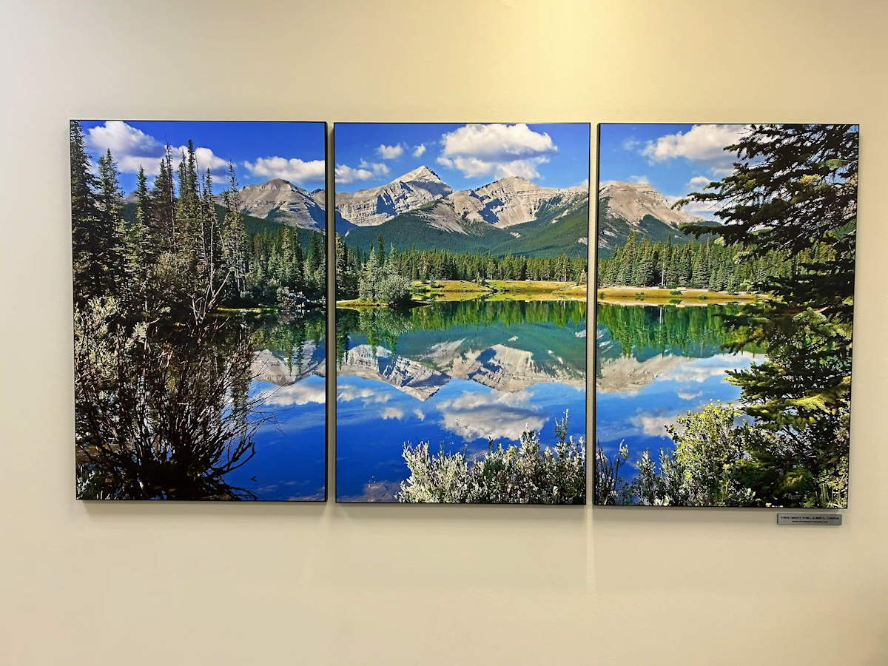
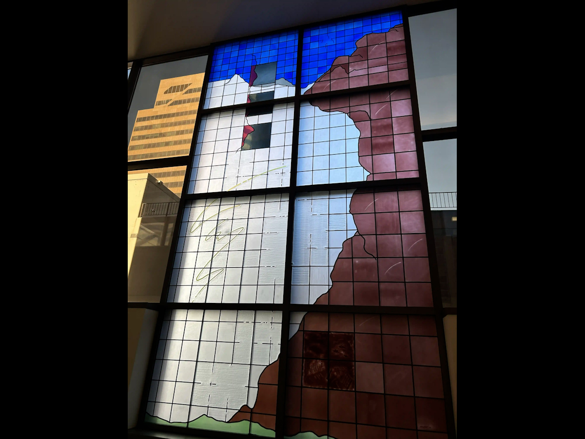
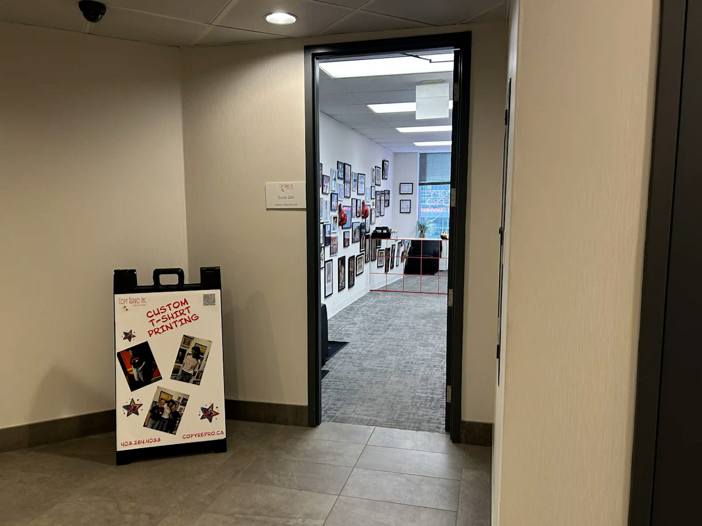
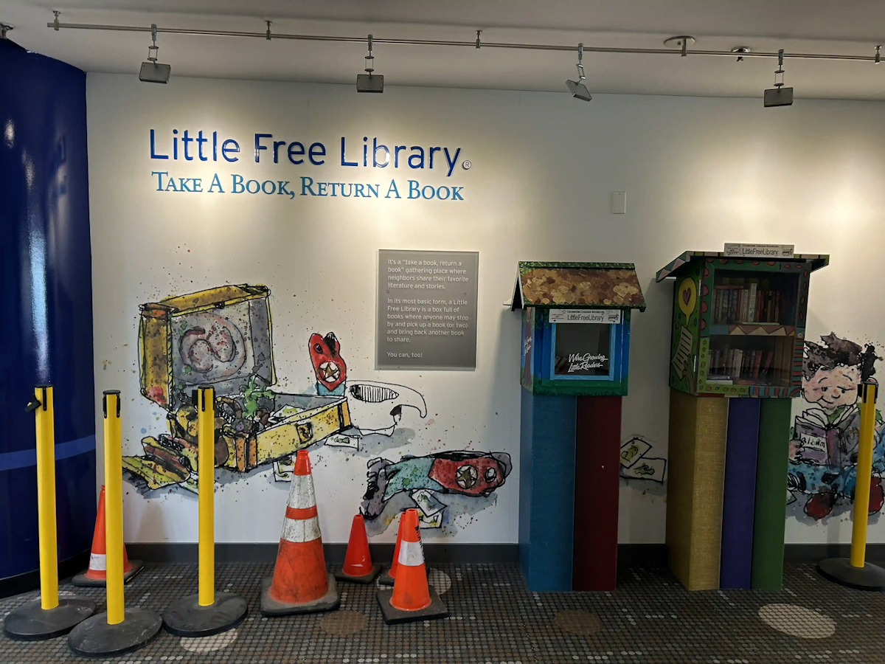
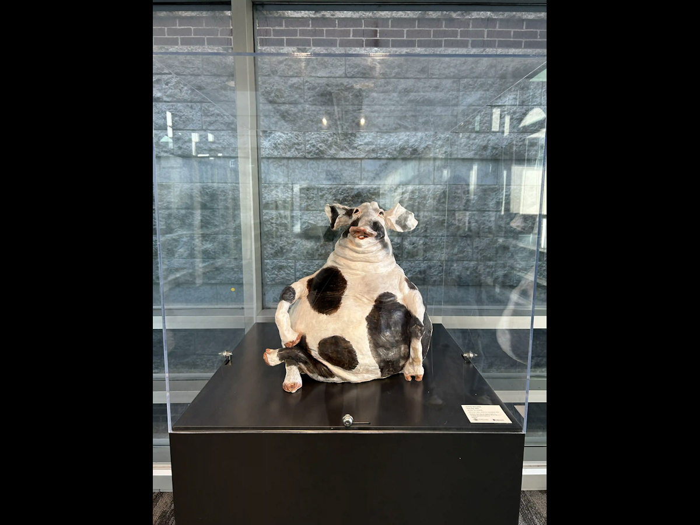
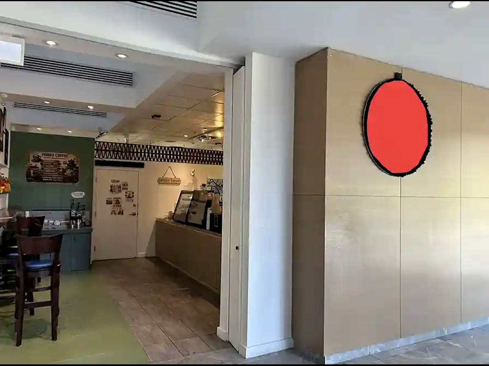
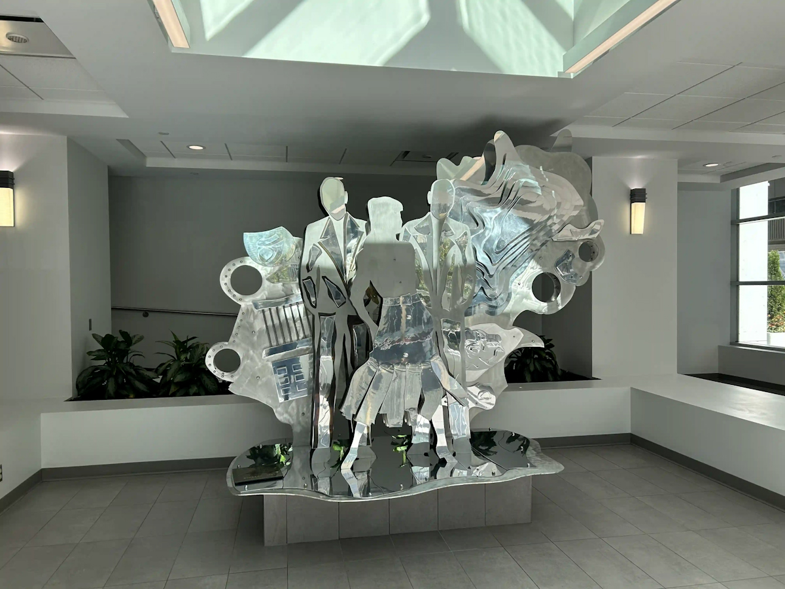
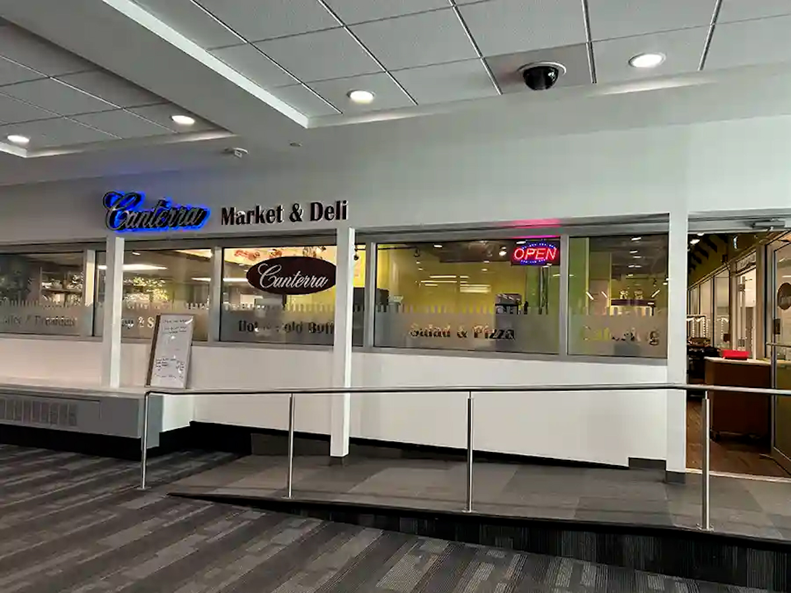
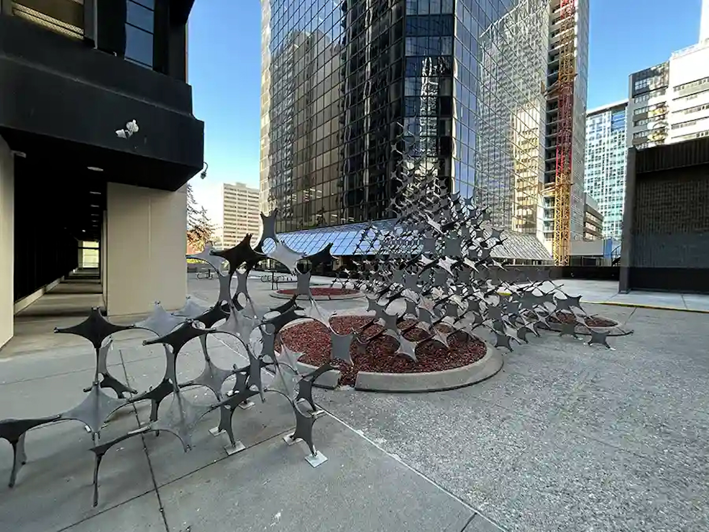

Question 1










What building is this Atrium located in?
What is this a painting of?
What theme does this glass panel pertain to, designed by Warren Carther Glass Studio, have?
"Copy Repro Inc" is a small company that lies within Petex Building. Without searching it up, what does this company do?
“Little Free Library”, located in Chevron Plaza. What is the purpose/concept of this little library?
Without searching it up, Who created “Pete Pig” and when?
There is a small local cafe between Aquitaine Tower and Chevron plaza within the +15 skywalk. What is the name of this cafe?
This Sculpture is located at 5th avenue SW Pacific Parkade within the skywalk.
Where is this contemporary bronze and metal sculpture located between, within the +15 skywalk?
This outdoor park can be found between 5th Ave. SW Pacific Parkade and 639 Fifth Ave. SW. Take a picture sitting on one of the benches.